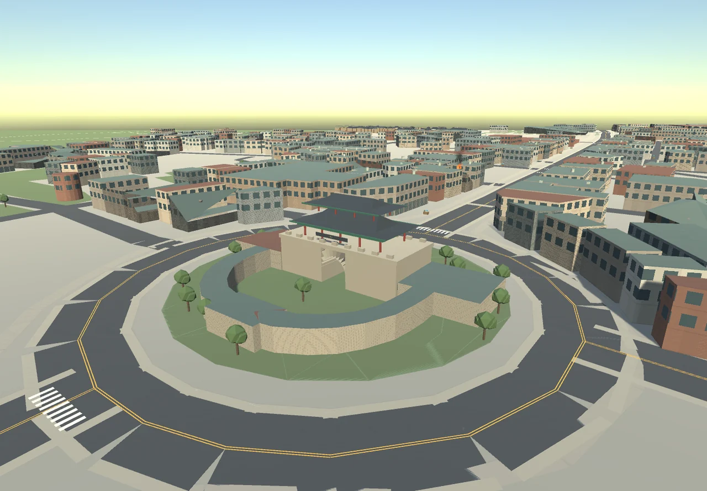
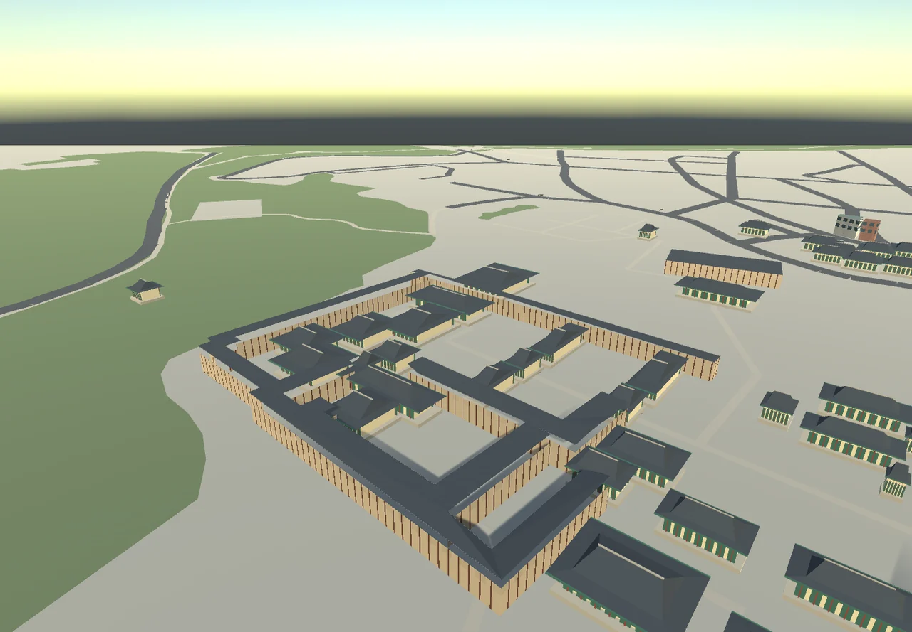
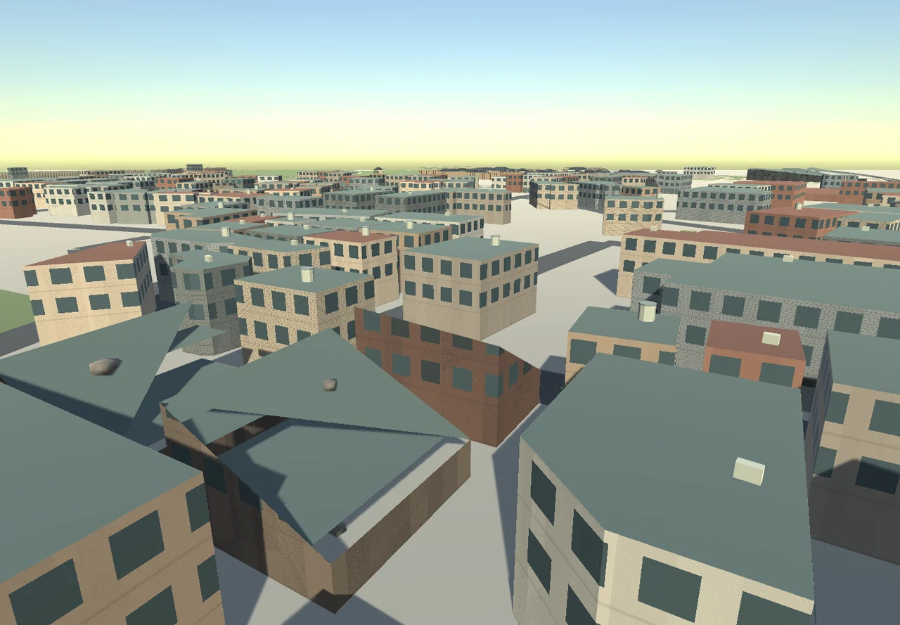
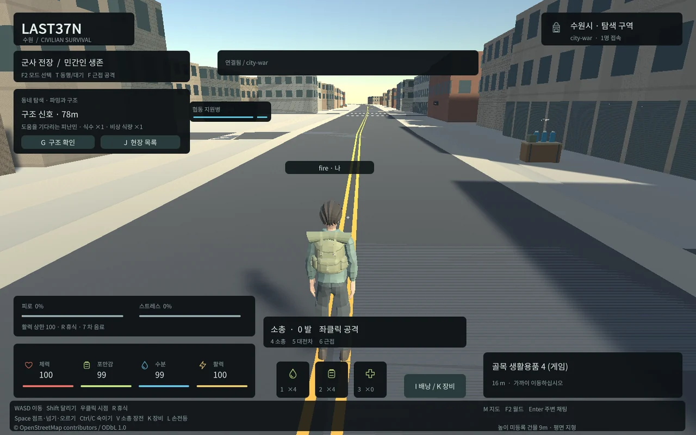
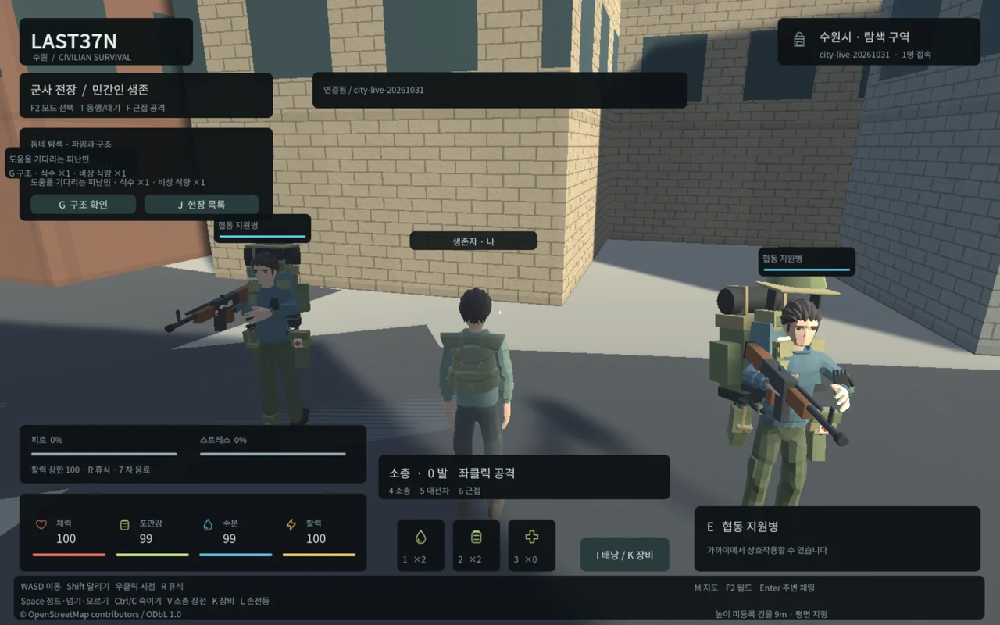
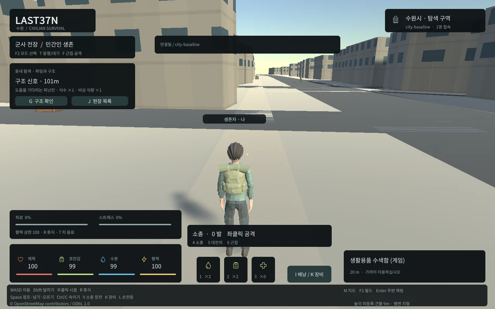

Tracefolio REPORTS & ISSUES
Tracefolio REPORTS & ISSUES수원 도시·반파/화재 적용 및 실제 서버 테스트
완료실제 OSM 수원 윤곽을 보존하고 성문·행궁/거리 표현과 월드별 허구의 피해를 추가했습니다. 로컬 게임 적용·89개 서버 검사·100명90초·실제 두 브라우저를 검증했습니다.
작업 결과
구현·Windows/Web 빌드·localhost8788 적용과 실제 게임 검증을 완료했습니다. 화면 조작 없이 Blender/Unity 배치와 헤드리스 Edge를 사용했습니다.
변경 내용
적용 내용
수원 건물37,308개·도로15,722개 원본 해시를 유지했습니다. 같은 PBF의 건물 태그37,230개, 녹지1,175개·성곽선5개를 ODbL 보조 데이터로 분리하고 성곽 충돌/도로 틈을 서버와 일치시켰습니다. 팔달문·장안문·화서문, 행궁 주변, 용도별 외벽·차선/보도·상점/옥상 설비·가로수를 추가했습니다. Blender 원본과7종FBX를 보존합니다.


반파18%, 그중 화재2.5%는 설정값입니다. 월드별 재현 가능한 허구이며 문화유산·시작 후보·세이프존·상호작용 지점은 보호합니다. 불꽃/연기는 가까운180m 최대6곳·총 입자 예산528, 동적 광원/그림자 없음입니다. 공유 재질로 도시 메쉬를 묶고 주변 청크만 gzip 전송합니다.


서버 테스트: tools/start-local.ps1 후 tools/test-server.ps1. 전체는 -Mode Full,100명90초는 -Mode Load. 일반 창과 시크릿 창에서 http://localhost:8788 →F2 같은 월드→서로 이동/Enter 채팅/재접속을 확인합니다. 일반 탭은 세션을 공유해 기존 접속이 교체될 수 있습니다. 현재127.0.0.1 전용이며 다른 PC/외부 접속용 공개 설정은 하지 않았습니다.

변경 전 실제 화면: 
검증
실제 Native6장면/모델·입자·예외0, 실제 두 Edge10개 검사(상호 위치·한글 채팅·점프·숙이기·재접속·두 월드 도시 재생성·오류0), 실제 수색/물소비/인벤토리/상인매매/의무병UI 회귀를 통과했습니다.89개 서버/실제PostGIS 테스트 실패0·건너뜀0, TypeScript 통과.100명90초·10명재접속·9900명령·900응답·p95 약114ms·최대 스냅샷 간격348ms·오류0. 이는 서버 WS 부하 시험이며100개 Unity 렌더가 아닙니다.
현재 Web 초기11095729bytes(10.58MiB)<12MiB, 실제 gzip/wasm MIME·DPR2에서1440x900 캔버스를 확인했습니다. 현재8788 새 월드에서 반파77·랜드마크1·화재4/입자예산352·장비12/동네수색18/구조3·오류0을 확인했습니다. Native 묶음29~50개는 OSM 기본 지오메트리 그룹 수이며 전체 GPU draw call 수가 아닙니다. Native meanFps는 배치 루프 값으로 렌더 FPS라고 보고하지 않았습니다.
사진은 모두 실제 게임 렌더이며1280px WebP6장 각각50~119KB, 메타데이터 제거·전후 바이트/해상도·실제 표시 품질을 확인했습니다. 근거는 docs/qa/city와 현재 소스/README/SUWON_CITY.md에 있습니다. 공식 형태 참고: https://www.visitsuwon.or.kr/base/board/read?boardManagementNo=2&boardNo=50&menuLevel=3&menuNo=2&page=1 . 사진을 게임 텍스처로 복제하지 않았습니다.
남은 사항
높이32,673개는 기존 임시9m, 지형은 평면이며 도시 전체의 정밀 복원이 아닙니다. 반파 건물은 원래 충돌을 유지하여 내부 진입은 안 됩니다. 화재 피해/확산/진압은 미구현입니다. 저사양/모바일·외부 인터넷·100개 Unity 화면 성능은 미확인입니다. 교훈 검토: 원본 지리와 허구 피해 분리, 실제 프레임에서 버튼 입력/시각 결과 확인은 기존 전역 증거·실행 지침에 포함되어 전역 지침 변경 없음. 프로젝트 상세와 실제 실패 이력을 보존했습니다.
작업 시간
- 제안 시간: 45~75분. 시작2026-10-31 04:14:41 KST.
- 실제로 완료된 시간: 기능 구현·빌드·실제 로컬 적용 검증 47분50초, 2026-10-31 05:02:31 KST. 외부 게시 검증은 별도 전달 기록에 남깁니다.
- XERJ: 미사용 — XERJ MCP/검색 도구가 제공되지 않아 rg·현재 소스·원본 해시·실제 실행/렌더로 확인했습니다.